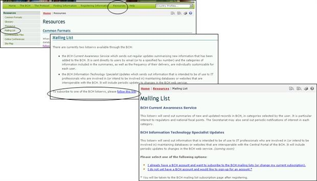

La Lista de Correos Electrónicos proporciona acceso a las listas automatizadas de distribución de correo que se encuentran disponibles en el Portal Central del CIISB. Éstas son listas de direcciones de correo electrónico de las personas que se han registrado para recibir información periódica acerca de un tópico en particular.
El Servicio de información actual del CIISB envía de forma periódica, un resumen actualizado de las novedades que fueron suministrada al CIISB. Ésta es enviada directamente a los usuarios por correo electrónico así como también es posible recibirlas por fax (por favor contactar a la Secretaría a fin de ingresar el número de fax en la lista de este servicio).
Las categorías de información incluidas en el resumen de información actualizada, así como la frecuencia de la distribución, pueden ser personalizadas por cada usuario de forma individual.
La Actualización de Especialistas en Tecnologías de Información del CIISB consiste en el envío de información destinada para los profesionales en tecnologías de información, especialmente para quienes están encargados del mantenimiento de las bases de datos o sitios web que son interoperables con el CIISB. Esto incluye actualizaciones y cambios hechos en el sitio web del CIISB.

La página de Lista de Correos Electrónicos proporciona los enlaces para la suscripción a los servicios disponibles para generar/actualizar las suscripciones de los usuarios.
El primer enlace, conduce al usuario a la página Ingresar al Centro de Gestión. Una vez el usuario ingresa al Centro de Gestión, puede suscribirse a una lista de distribución automatizada.
El Segundo enlace, abre la página Registro de una cuenta de correo electrónico. Los usuarios se registran según el tipo de afiliación que tienen con el CIISB (por ej. Punto Focal Nacional del CIISB, Organización de Creación de Capacidad, Expertos en Bioseguridad, etc.)
En el Módulo MO06 se proporcionan más detalles sobre el Centro de Gestión del CIISB.